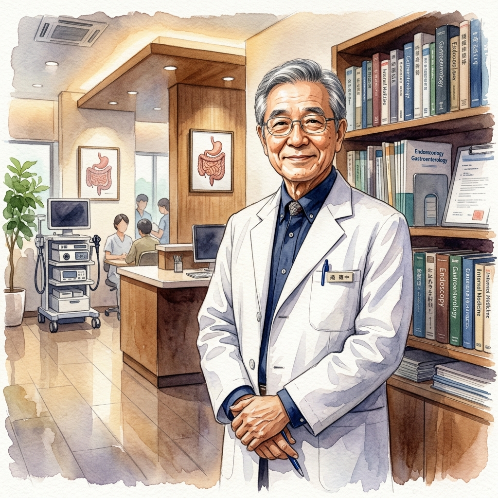

Pionero de la colonoscopia moderna, cirujano de fama mundial y defensor del Agua Kangen como pilar fundamental de la salud digestiva. Su obra ha transformado la medicina preventiva global.

El Doctor Hiromi Shinya es reconocido mundialmente como pionero en la creación de técnicas modernas para la colonoscopia. Es un cirujano profesional de nacionalidad japonesa, con más de 50 años de experiencia en el campo de la medicina. Realizó la primera cirugía de colon no invasivo, y usando su propia creación —la colonoscopia— descubrió la posibilidad de examinar y operar el colon sin incisión abdominal.
Se formó dentro del campo de la medicina en centros educativos tanto en Japón como en EE.UU. Es profesor clínico de cirugía en el Albert Einstein College de Medicina y Jefe de la Unidad de Endoscopia del Hospital Beth Israel en Nueva York. Además, es asesor en el Hospital Maeda y Vicepresidente de la Asociación Médica de Japón en los EE.UU., y pasa consulta como digestivo en Tokio (Japón).
Profesor clínico de cirugía
Jefe de Endoscopia, Nueva York
Vicepresidente en EE.UU.
Médico personal y consultor
Tras 50 años, su profesión sigue activa y la practica diariamente. Pasa consulta la mitad del año en Nueva York, y la otra mitad en Tokio. El Dr. Hiromi Shinya es uno de los médicos más importantes en Japón, y trata a los miembros de la familia imperial de Japón, así como a los altos cargos del gobierno. En los EE.UU. también trata a grandes celebridades y presidentes.
Un colon limpio y saludable es uno de los precursores para obtener una salud óptima. La gran mayoría de las dolencias del cuerpo y las enfermedades son originadas por contar con un colon ácido y sucio.
— Dr. Hiromi ShinyaA lo largo de décadas de práctica médica y decenas de miles de colonoscopias realizadas, el Dr. Shinya observó un patrón claro: los pacientes que consumían agua alcalina ionizada presentaban un colon significativamente más limpio y saludable que aquellos que bebían agua convencional o embotellada.
Esta observación le llevó a recomendar el Agua Kangen como parte fundamental de su programa de salud digestiva. En sus libros, el Dr. Shinya explica cómo el agua de calidad es determinante para mantener el equilibrio enzimático del organismo y prevenir la acumulación de toxinas en el intestino grueso.
El Dr. Shinya desarrolló una teoría revolucionaria: existe una "enzima madre" o enzima prodigiosa que es la base de todas las enzimas del organismo. Cuando esta enzima se agota por un estilo de vida inadecuado —mala alimentación, estrés, contaminación, agua de mala calidad— el cuerpo pierde su capacidad de autoreparación.
Base de todas las enzimas del cuerpo. Fundamental para la autoreparación celular.
El agua alcalina ionizada protege y preserva las enzimas del organismo.
Un organismo con enzimas saludables combate enfermedades con mayor eficacia.
Cuatro obras esenciales que revelan la conexión entre la calidad del agua, las enzimas y la salud óptima. El Agua Kangen es mencionada en todas ellas.
La obra maestra del Dr. Shinya. Revela cómo una dieta basada en enzimas y agua de calidad puede transformar la salud. Best-seller mundial con millones de copias vendidas.
Profundiza en los conceptos del primer libro, con nuevas investigaciones sobre la conexión entre el agua ionizada, la flora intestinal y la longevidad saludable.
Explora el envejecimiento desde la perspectiva enzimática. Cómo el agua alcalina contribuye a ralentizar el proceso de envejecimiento celular de forma natural.
La última gran obra que conecta la microbiota intestinal con la salud global. El agua de calidad como medio ideal para el equilibrio del ecosistema microbiano.
Los libros del Dr. Shinya no son simples manuales de salud. Son el resultado de más de 50 años de práctica clínica y más de 300.000 colonoscopias realizadas, lo que lo convierte en una de las voces más autorizadas del mundo en salud digestiva.
A través de sus obras, demuestra que la calidad del agua que bebemos determina directamente la salud de nuestro intestino, la vitalidad de nuestras enzimas y, en consecuencia, nuestra capacidad de resistir enfermedades y envejecer con dignidad y energía.
El impacto del Dr. Shinya trasciende la medicina. Su visión ha redefinido cómo millones de personas entienden la relación entre el agua, la alimentación y la salud.
El programa de salud del Dr. Shinya se basa en principios sencillos pero poderosos, accesibles para cualquier persona que desee transformar su bienestar:
Beber agua alcalina ionizada (Kangen) como base de la hidratación diaria.
85% vegetales, 15% proteínas animales. Alimentos frescos y sin procesar.
Actividad física regular sin excesos, para oxigenar los tejidos.
Dormir entre 6-8 horas, acostándose antes de medianoche.
Mantener un colon limpio a través de la hidratación y la fibra natural.
Prácticas de relajación para reducir el estrés y la acidificación.
Una actitud positiva como componente esencial de la salud holística.
A lo largo de su carrera, el Dr. Shinya ha realizado más de 300.000 colonoscopias, una cifra sin precedentes en la historia de la medicina. Esta experiencia única le permitió observar patrones que ningún otro médico había documentado:
Los pacientes que bebían agua Kangen y seguían una dieta rica en enzimas presentaban un intestino visiblemente más limpio, con vellosidades intestinales sanas y rosadas, frente a los intestinos oscurecidos y contaminados de quienes bebían agua de mala calidad.
— Observación clínica del Dr. ShinyaEsta evidencia clínica directa —no teórica, sino visual y comprobable— es uno de los argumentos más poderosos a favor del Agua Kangen. No se trata de promesas vacías, sino de décadas de observación médica rigurosa por parte de uno de los cirujanos más respetados del mundo.